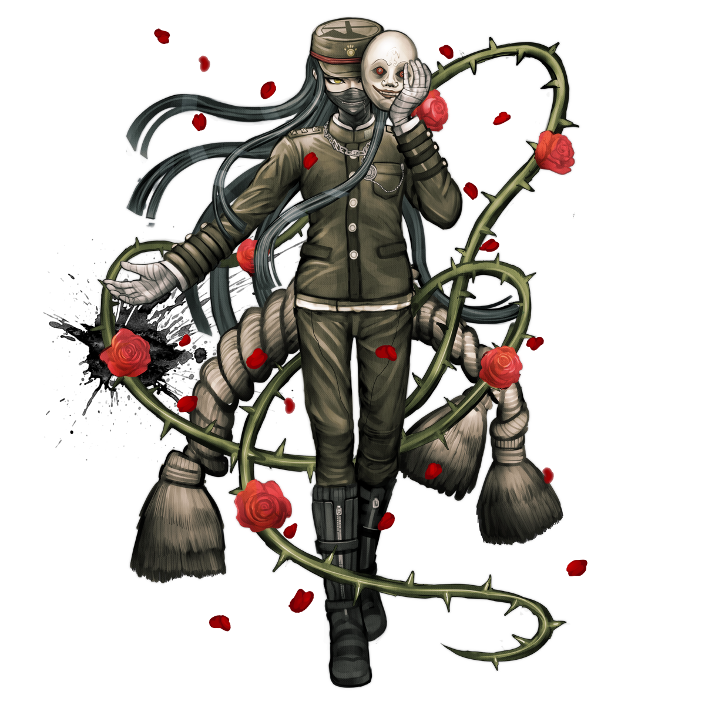

Korekiyo Shinguji
Korekiyo Shinguji (真宮寺 是清), also known as Kiyo, is a student in the Ultimate Academy for Gifted Juveniles and a participant of the Killing School Semester featured in Danganronpa V3: Killing Harmony. His title is the Ultimate Anthropologist (超高校級の「民俗学者」 lit. Super High School Level Anthropologist).
